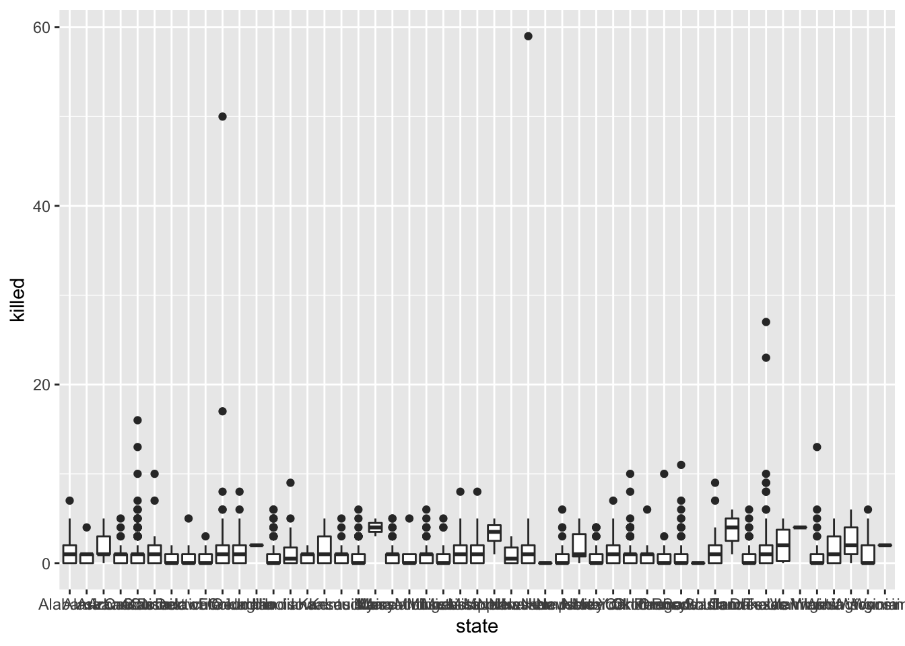
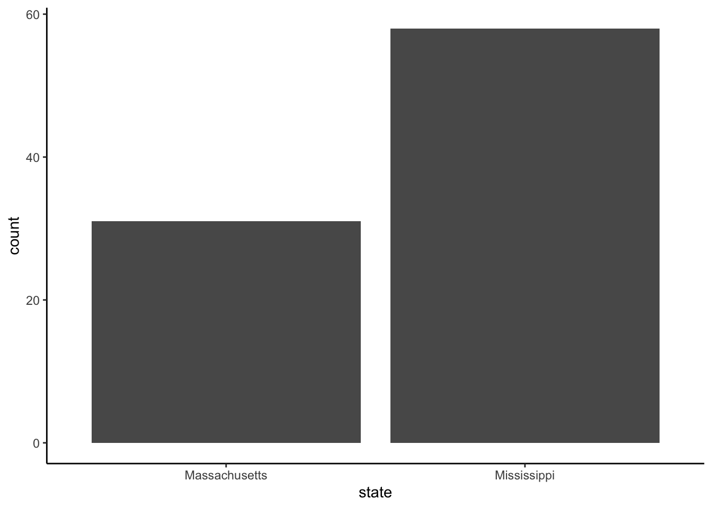
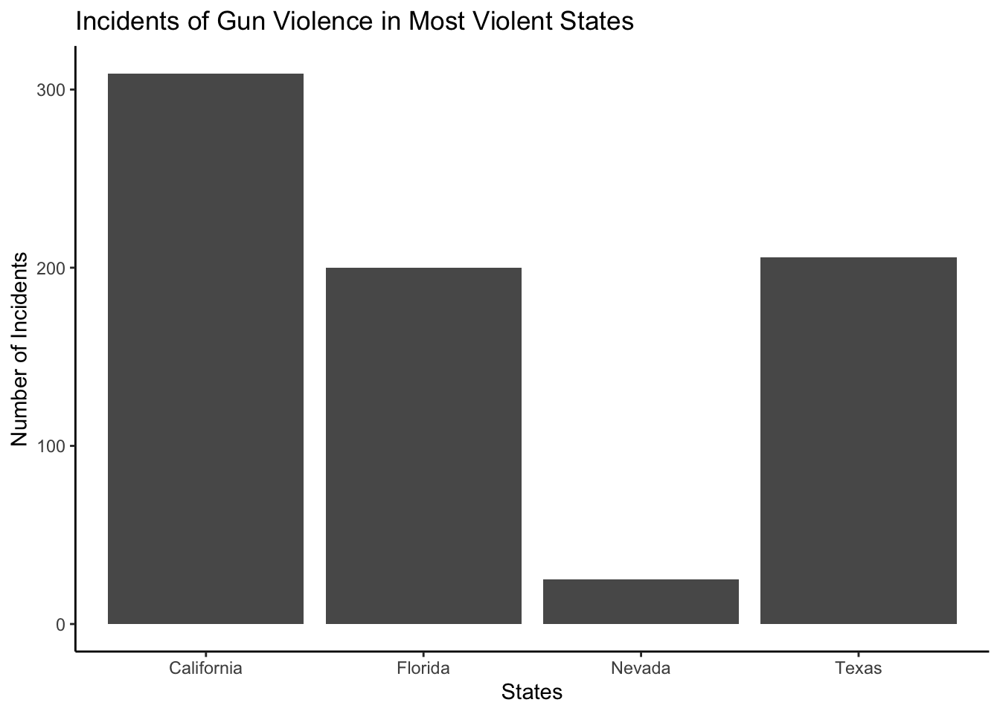
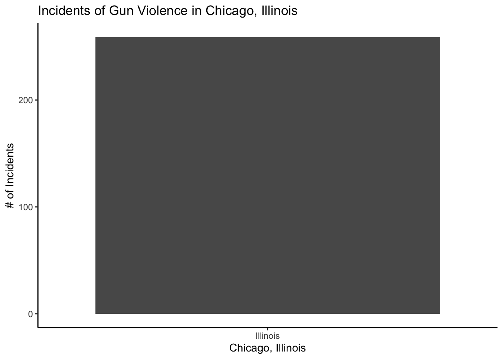
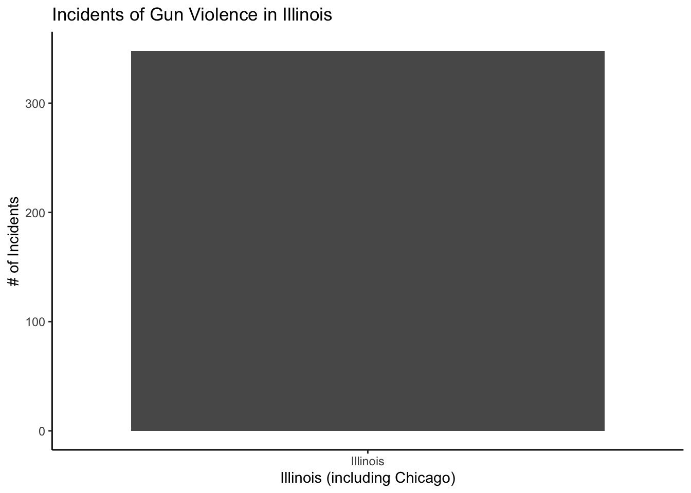
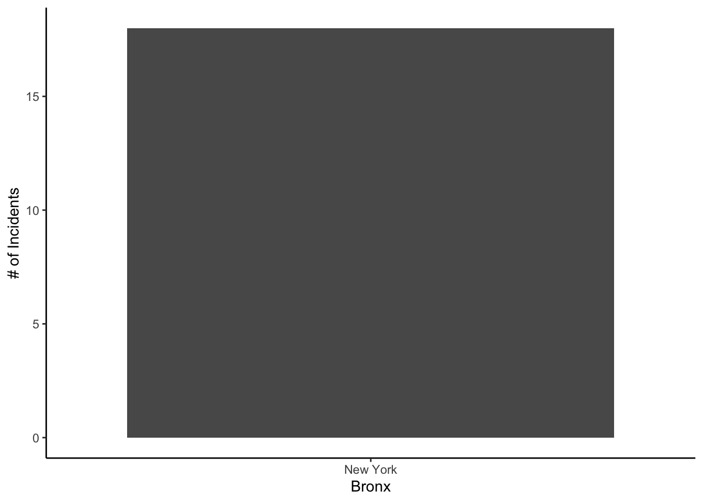
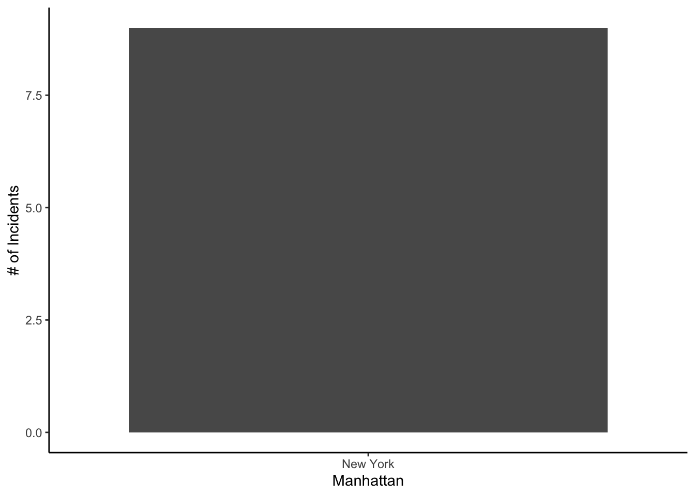
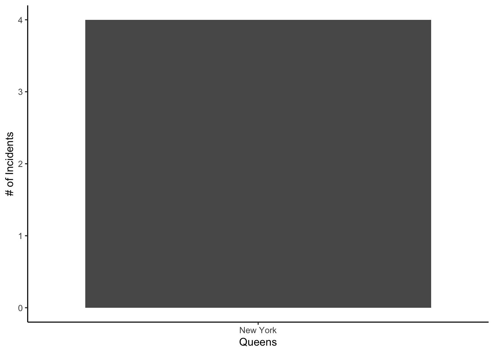

Gun violence plagues the United States. In the past two to three decades, gun violence has been on a steady rise, a rise that has not faltered. With another school shooting happening late last month, I thought it best to visualize and get familiar with the rise of school shootings, where they most tend to happen, at what frequency, and how deadly they are. The problem of gun violence is so multifaceted, bogged down by political interests and personal ideology. In one paper, I do not aim to address the problem of gun violence in America, but I do hope to help visualize certain patterns in location and frequency that aid in discussion of this national public safety issue.
Based on anecdotal evidence, I find Colorado has a large amount of at least infamous shootings, but this data set will help prove if I am right or if other states share the burden. Columbine, Parkland, Sandy Hook, are all names that society has felt one way or another. In years to come, names will continue to pile onto this never ending list if actions to curb gun violence are not implemented.
Gun rights and gun violence attract intense debates and furious supporters on both sides of this never-ending issue. For an issue as divisive as this, there needs to be clear visualization of where and how frequent shootings occur. The goal of this project is to focus on the areas most impacted by gun violence. Where do many of these incidents occur? Is there a period of time when the frequency of gun violence was higher than others? Further areas the project could continue to and limitations will be discussed in the conclusion.
Data:
There were only a handful of other datasets on Kaggle that relate to gun violence, but I chose US Gun Violence because of how extensive it was with variables that suited what I wanted to look at. The dataset was aggregated from the gun violence archive website (www.gunviolencearchive.org) and contains incidents of gun violence from January 2014 to September 2021. While some of the entries are notorious mass shootings, many are incidents with only a few injured.
With shootings that may have consumed news cycles for weeks, imbedding themselves in US culture, to gun violence that may have only snapped onto a newsfeed, this dataset contains it all. Hopefully, this paints a picture of a highly diverse dataset with all kinds of incidents of gun violence. Some states in the graphs will be compared based on if they are shall issue state or a may issue state. Shall issue refers to states that will issue a gun permit as long as you pass basic requirements set up by the local law. A may issue state will issue a license at the discretion of the local law enforcement. Essential, a may issue is not a guarantee of a permit, while a shall issue is.
gun_violence <-read_csv("US-Gun-Violence.csv")
Rows: 3230 Columns: 7
── Column specification ────────────────────────────────────────────────────────
Delimiter: ","
chr (4): incident_date, state, city_or_county, address
dbl (3): incident_id, killed, injured
ℹ Use `spec()` to retrieve the full column specification for this data.
ℹ Specify the column types or set `show_col_types = FALSE` to quiet this message.
view(gun_violence)
Above is the data set in its entirety. As you can see it’s laid out with seven columns. The following variables are included in this set: “incident_id”, “incident_date”, “state”, “city_or_county”, “address”, “killed”, “injured”. The first column, “incident_id”, is irrelevant to this research so I will get rid of it in the next section. The same goes for the “address” column.
The dataset is quite clean without essentially any missing values or entries. This is one of the cleaner datasets I discovered. Unlike government or self collected datasets that can be messy or poorly formatted, I found this one to be well organized and thorough. It became the obvious choice when looking at other datasets when I was looking at the cleanliness and organization of the Kaggle page. As a first project of this scale, my main priority was to find a dataset that was not too large in scope, but one I could still mold to my liking and have substantial data entries. US Gun Violence fits all that criteria.
For right now, I just want to create variables for certain chunks of data and create some variables.
The “most_violent” variable only contains six incidents of gun violence. Keep in mind, this variable contains the incidents with both more than ten injured and more than ten killed. The same is true for the “least_violent” variable in that it includes both columns less than three.
The most violent shootings from 2014 to 2021 are as follows: The El Paso shooting, Parkland, Sutherland Springs church shooting, Las Vegas shooting, the Orlando nightclub shooting, and San Bernardino.
As I mentioned previously, the columns “incident_id” and “address” were not useful in my research. Below I display getting rid of them to focus purely on the remaining five columns.
With the unnecessary variables gone, I can view gun_violence much quicker, only looking at the columns I need.
For some states, I decided to create specific variables to quickly call up certain states that I was interested in. I will also use this if I want to call up specific dates or cities in that specific state.
florida_shootings <-filter(gun_violence, state =="Florida")view(florida_shootings)
Below contains code for separating all shooting incidents in each specific New York borough from 2014 to 2021 to later compare NYC gun violence in specific boroughs.
nycMan_shootings <-filter(gun_violence, state =="New York", city_or_county =="New York (Manhattan)")view(nycMan_shootings)nycBrk_shootings <-filter(gun_violence, state =="New York", city_or_county =="Brooklyn")view(nycBrk_shootings)nycQ_shootings <-filter(gun_violence, state =="New York", city_or_county =="Queens")view(nycQ_shootings)nycBrx_shootings <-filter(gun_violence, state =="New York", city_or_county =="Bronx")view(nycBrx_shootings)nycSI_shootings <-filter(gun_violence, state =="New York", city_or_county =="Staten Island")view(nycSI_shootings)
Visualizing Data:
The best way I figured to look at gun violence is in the form of graphs and bar charts.
ggplot(gun_violence, aes(x = state, y = killed)) +geom_boxplot()

Even though it is difficult to view the names of each state, it provides a clear view of a zoomed-out look at gun deaths in the United States. This histogram points out instances of extreme casualties as a result of gun violence, while also giving a clear picture of any outlying incidents of gun violence (most_violent) and the general number of incidents in a given state.
This graph displays the number of incidents of gun violence in both Massachusetts and Mississippi, states that lie on the opposite ends of the political ideology spectrum.
gun_violence %>%filter(state =="Mississippi"| state =="Massachusetts") %>%ggplot(aes(state, fill = killed))+geom_bar()+theme_classic()

Based on the graph it’s clear, at least when looking at these two states, Mississippi has almost double the number of gun violence incidents than Massachusetts. This graph is used just to test out two states before doing any sort of analysis. Right at the beginning there is something here. California is particularly interesting because their gun control laws are some of the most restrictive in the United States, yet they have one of the highest number of gun violence incidents.
gun_violence %>%filter(state =="Florida"| state =="Texas"| state =="California"| state =="Nevada") %>%ggplot(aes(state, fill = killed))+geom_bar()+theme_classic()+labs(x ="States",y ="Number of Incidents",title ="Incidents of Gun Violence in Most Violent States")

In this graph, I took all the states that fall in the “most_violent” variable made previously. To reiterate, the “most_violent” variable means the most violent shootings in the dataset. Aside from Nevada, all of the states have higher than average incidents of gun violence. A factor I think of when viewing these states next to one another is their population density. This factor is almost beyond the scope of my project, but population density is a necessary variable that must be accounted for when analyzing gun violence.
For example, Maine has only had three incidents of gun violence in this whole period of time, while California is well over 250. New Hampshire and Wyoming only have one incident each. In New Hampshire, this incident of gun violence did not even involve a death.
Now when looking at this, population density and gun laws are not taken into account, something out of the scope of this project.
Chicago, Illinois
Chicago is one of the most notorious cities in the gun violence debate and crime violence. I use ggplot to visualize how violent the city of Chicago is compared to the entire state of Illinois.
gun_violence %>%filter(state =="Illinois", city_or_county =="Chicago") %>%ggplot(aes(state, fill = killed))+geom_bar()+theme_classic()+labs(x ="Chicago, Illinois",y ="# of Incidents",title ="Incidents of Gun Violence in Chicago, Illinois")

gun_violence %>%filter(state =="Illinois") %>%ggplot(aes(state, fill = killed))+geom_bar()+theme_classic()+labs(x ="Illinois (including Chicago)",y ="# of Incidents",title ="Incidents of Gun Violence in Illinois")

With Illinois at one of the above average incidents of gun violence, I felt it important to solely visualize shooting incidents in Chicago for this first graph. To put into perspective, Illinois incidents of gun violence totals ~340 in the entire state. About 240 of those incidents were in Chicago. It was quite shocking to discover that 70% of incidents of gun violence in Illinois happen in Chicago. Population density is an important factor for looking at gun violence in cities versus rural areas, but 70% is still a significant amount.
The Five Boroughs of New York City
As one of the major cities in the entire world, New York City is no stranger to gun violence and crime rates, but what is the safest borough? In an area impacted by the same gun laws, are certain areas of the city more prone to gun violence than others? What difference, if any, is there in a particular borough?
To refresh, here are the various variables for each borough of NYC above. Even by looking at the numbers of the data in table form, I can already get my answer, but I find it much easier to look at in graph form.
gun_violence %>%filter(state =="New York", city_or_county =="Bronx") %>%ggplot(aes(state, fill = killed))+geom_bar()+theme_classic()+labs(x ="Bronx",y ="# of Incidents")

gun_violence %>%filter(state =="New York", city_or_county =="Brooklyn") %>%ggplot(aes(state, fill = killed))+geom_bar()+theme_classic()+labs(x ="Brooklyn",y ="# of Incidents")
gun_violence %>%filter(state =="New York", city_or_county =="New York (Manhattan)") %>%ggplot(aes(state, fill = killed))+geom_bar()+theme_classic()+labs(x ="Manhattan",y ="# of Incidents")

gun_violence %>%filter(state =="New York", city_or_county =="Queens") %>%ggplot(aes(state, fill = killed))+geom_bar()+theme_classic()+labs(x ="Queens",y ="# of Incidents")

I chose not to include the graph for Staten Island because there are no recorded incidents of gun violence in this dataset, technically making it the “safest” borough in New York City. Brooklyn far surpasses every other borough with a total of 45, which was surprising to me until I researched the total population of the boroughs. Brooklyn also has the largest population, so the elevated number of incidents makes sense in that regard. At first, I thought Manhattan had the largest population, but they fall at number three according to 2016 census data. With the same data, Staten Island has the lowest population, explaining the low number of incidents of gun violence. In this case, it appears population is mostly the factor for the high number of gun violence incidents within the boroughs. It’s a state with the same gun laws, yet we are clearly observing a huge difference within the different regions.
Reflections:
This project was one of the most fascinating I have taken on. While it took me some time to settle in on this data set, I’m glad I did. Never had I looked into gun violence from a pure numbers standpoint and a lot of the results I came out with, in just seven years of data. It was extremely rewarding to look at gun violence in America from this point of view because, as policy can be debated ad nauseum, you really will not be able to understand this issue without looking at the data. I realize that is true for many issues that plague our political atmosphere, and even though it will not make you an expert, it can still provide an insight that was previously inaccessible.
There is much more that could be done with this project, as the scope is massive. My novice abilities in R have to be one of the limitations because I know there are other ways I can manipulate and visualize the trends in this dataset, but I am unable to do so. What I chose to look at is only a fraction of the ways to look at the data. Had I been able to dedicate more time to such a project, I would compare more states based on political leanings and their incidents of gun violence. As I have mentioned a few times, the importance of population density cannot be overlooked. I addressed it mildly, but I would have liked to use it so much more in this project.
Conclusion:
I wish I was able to find/have more time with this dataset to further parse it out. As a first project, this was extremely interesting, yet grueling. Luckily, the data cleaning process was not too difficult, but there was a lot to visualize and I envision, with more time, cleaning up graphs and creating more variables for individual states. I greatly wish I was able to get into more analysis of states in a particular region and incorporate the population density. I do not believe the scope of the project was too much to handle for someone with little experience in research and data analysis with R.
The dataset was a perfect amount to handle, but I do desire to use one that has incidents of gun violence going back much further. This was purely a snapshot of only seven years, but a lot can be seen with a dataset as extensive as this one and I think the extent of my project showed that.